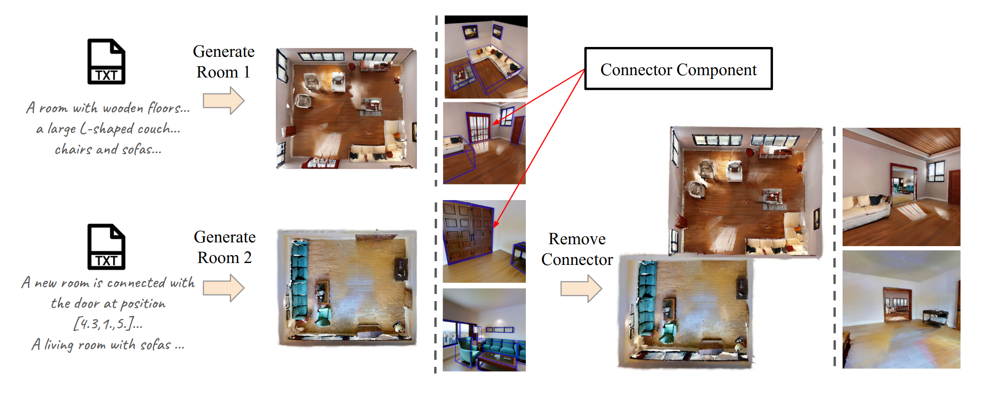
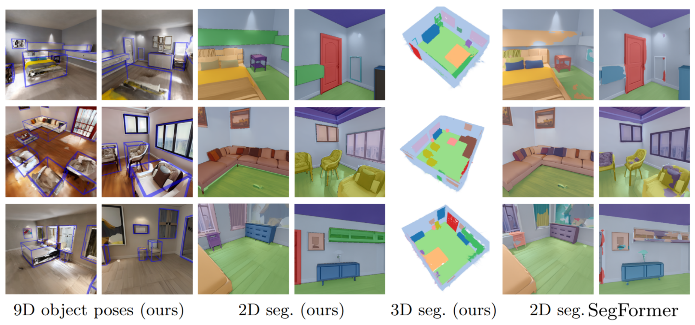

Website source code borrowed from here.
We present GuidedSceneGen, a text-to-3D generation framework that produces metrically accurate, globally consistent, and semantically interpretable indoor scenes. Unlike prior text-driven methods that often suffer from geometric drift or scale ambiguity, our approach maintains an absolute world coordinate frame throughout the entire generation process. Starting from a textual scene description, we predict a global 3D layout encoding both semantic and geometric structure, which serves as a guiding proxy for downstream stages. A semantics- and depth-conditioned panoramic diffusion model then synthesizes 360° imagery aligned with the global layout, substantially improving spatial coherence. To explore unobserved regions, we employ a video diffusion model guided by optimized camera trajectories that balances coverage and collision avoidance, achieving up to 10x faster sampling compared to exhaustive path exploration. The generated views are fused using 3D Gaussian Splatting, yielding a consistent and fully navigable 3D scene in absolute scale. GuidedSceneGen enables accurate transfer of object poses and semantic labels from layout to reconstruction, and supports progressive scene expansion without re-alignment. Quantitative results and a user study demonstrate greater 3D consistency and layout plausibility compared to recent panoramic text-to-3D baselines.

After a first scene is generated, our frame work enables seamless iterative scene expansion. First, the previous 3D proxy as well as a textual description of the new scene is given as input to Holodeck. This enables us to extend the 3D proxy in the global world coordinate frame. Then, each room can be generated independently, whereas the generated results will automatically align due to the 3D proxy guidance. To seamlessly connect the rooms, we can remove the gaussians of the connector component by utilizing the corresponding semantic and pose information. Note that our scene expansion application is iterative and single scenes can be generated independently, hence large scenes generation with multiple rooms can be achieved without increasing memory or computation demands.

9D object poses and 2D semantic masks transferred from the 3D proxy align well with novel views of the final 3DGS scene and enable reliable 3D Gaussian segmentation via clustering. Compared to predictions of SegFormer, a specialist model trained for 2D indoor scene segmentation, our transferred annotations are more precise.
Website source code borrowed from here.